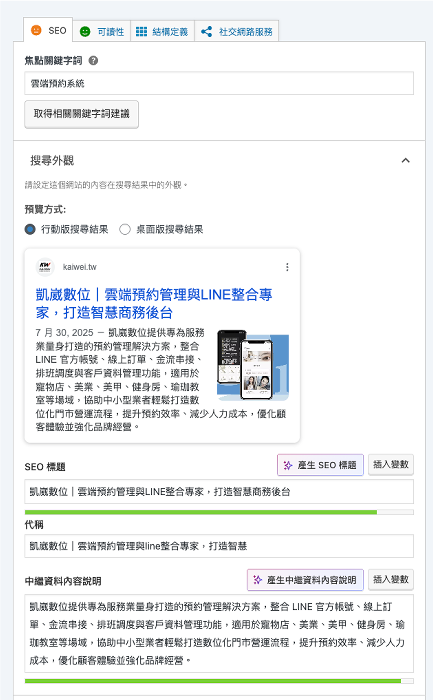

Title 修改
凱崴數位｜雲端預約管理與LINE整合專家，打造智慧商務後台
Meta Description 修改
凱崴數位提供專為服務業量身打造的預約管理解決方案，整合 LINE 官方帳號、線上訂單、金流串接、排班調度與客戶資料管理功能，適用於寵物店、美業、美甲、健身房、瑜珈教室等場域，協助中小型業者輕鬆打造數位化門市營運流程，提升預約效率、減少人力成本，優化顧客體驗並強化品牌經營。

關於凱崴數位｜預約管理與LINE整合專家，打造智慧商務後台
凱崴數位專注於開發預約管理與顧客經營系統，整合 LINE 官方帳號串接、線上預約、排班系統、銷售分析與多元模組，協助美業、美甲、健身房、瑜珈教室、寵物門市等服務業者，打造數位化營運流程。從顧客預約、金流整合到顧客關係維護，一站式解決門市日常管理問題，提升營運效率與顧客體驗。

凱崴數位雲端預約系統｜LINE 整合收款管理平台